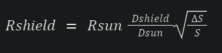
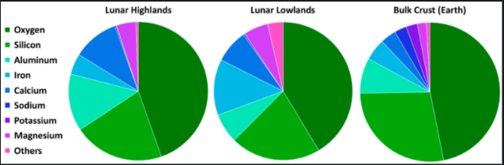
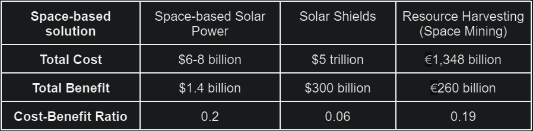

- Introduction
- Solar Power
- Solar Shielding
- Resource Harvesting
- Conclusion
- References
- Contact
'Investigations of the sun, the moon and the heavens.'
'Investigations of the sun, the moon and the heavens.'

Our mission is to recognise and discuss various space-based climate change mitigation methods that could pave the way for a new frontier in saving our planet. This webpage examines 3 distinct innovative methods that could solve our climate crisis - space-based solar power, solar shields and resource harvesting. We bring to you a more contemporary approach to solving the climate change problem. As a collective, we have worked together to give you a deep dive into possible space-based mitigation strategies. The goal of this website is to examine the feasibility of looking to space to solve the climate change problem. Either scroll through the page and access the information in the order we thought best to present or use the navigation bar found at the top to jump to sections within the report. For any queries use the contact section found at the far left of the navigation bar. All references can be found in text using superscript hyperlinks, similar to this[n], by clicking on an figure/image, or in the additional references list. Sixty years ago, we pushed the boundaries of human and technological capabilities by landing on the moon. As a result, space exploration became the forefront of science. The desire to explore what is beyond our planet and discover more about the universe became important in driving the future of human civilisation. Using space to our advantage has benefited mankind in many ways over the last few decades; we have sent thousands of satellites into orbit around Earth, which allow us to transmit television signals, navigate to a desired location, communicate in-flight on airplanes, and study meteorological effects on a global scale[1]. However, meteorological data obtained using satellites has shown concerning results. According to NASA, 37% of the Earth’s population will be exposed to severe heat waves if the Earth’s average temperature was to increase by 2 degrees Celsius. Furthermore, this would result in 18% of insects, 16% of plants and 8% of vertebrates having their geographic range reduced by more than a half. The risks to human health, food security, water supply and economic growth will also increase significantly, with communities that heavily rely on agriculture being at the highest risk[2]. Clearly, we have accelerated a serious problem which will have a detrimental impact on the future of human existence. Climate change has been becoming more and more noticeable in the last few decades, and it will continue to have a severe impact on our planet, unless we do something to change this as soon as possible. This webpage aims to explore pathways to prevent climate change by assessing the feasibility and utility of space to tackle this rising dilemma using 3 distinct climate change mitigation methods, namely space-based solar power, solar shields, and resource harvesting. It will also recommend the most feasible method that could be implemented in the real world. A question we can pose to ourselves is - if we have managed to make use of space to benefit our lives and expand our knowledge in many different ways through the use of satellites (including examining the effects of climate change), can we go further and utilise it to tackle climate change? Furthermore, could this be achieved in the near future, or have we truly reached a point of no return? This webpage will argue whether or not space could assist in solving the problem of climate change. Space has always been thought to be the work of rocket scientists or theoretical physicists in front of blackboards filled with inconceivable formulae. But space is everyone’s business. We strive to lend our knowledge of space to everyone, to better mankind on Earth or wherever they may travel. By combining this knowledge with the policies behind climate change, we hope to investigate strategies that will leave a better, lasting impact on future generations.
The world’s energy demand is the main driver of climate change, due to heavy use of non-renewable energy sources, specifically fossil fuels. It has been increasing exponentially over the last few decades, and it is predicted that we will require 2-3 times more energy in 2050 than we do today[3]. While transitions to renewable energy sources such as solar power and wind power have eased the demand for non-renewable energy, they have not solved the climate crisis. This implies that there needs to be an emergence of a renewable energy source, and hence a discovery of new ideas. Space clearly holds the solutions to climate change - harnessing the energy of space will give us an effectively unlimited supply of renewable energy. However, this alternative resource is only viable if we are politically and economically willing to reach it[4].
Solar power has already proven to be an effective method of generating electricity on Earth as a renewable energy source alternative to burning fossil fuels and nuclear power. However, Earth-based solar power has several major drawbacks. This includes the fact that solar panels are not able to harness the Sun’s energy constantly and uniformly throughout the year due to the day-night cycle on Earth. In addition, solar farms take up large amounts of land, which disturbes local ecosystems and uses space that could be used for other purposes[5]. We are therefore motivated to consider whether moving from Earth-based solar power to space-based solar power would be a feasible and viable option in helping to address climate change...

This is because moving our solar power technology to space would eliminate the consequences of the day-night cycle, as a solar power satellite can be launched into a position where there is a large and constant solar flux, meaning that it can continuously use the Sun’s radiation to produce electricity. It would also mean that we would not have to use large amounts of land on Earth for solar farms, which would allow us to further combat climate change by planting more trees or growing crops in place of solar farms. There are two main components that we need to consider in order to assess whether space-based solar power could be a realistic method of energy generation - using a solar power satellite to convert solar energy into electricity, and converting this electricity into radiation which can be wirelessly transmitted down to Earth. The solar power satellite can either utilise photovoltaic cells to convert solar radiation into electricity, or extract energy from charged particles emitted by the Sun (or other sources in space). While the former is more familiar to us as it is the same technology that is used in solar panels on Earth, the latter involves using a static solar sail to harvest energy from charged particles[6].
The two most important events from which we can extract energy using a static solar sail are solar wind and galactic cosmic rays. Solar wind is a stream of charged particles (consisting mainly of protons and electrons) that is ejected from the upper atmosphere of the Sun. These charged particles can escape the Sun due to the high temperatures in the upper atmosphere, giving them enough energy to overcome the Sun’s gravitational field. Galactic cosmic rays are also streams of charged particles, which can originate from supernovae of massive stars, quasars and gamma ray bursts. A static solar sail makes use of radiation pressure to remain stationary in space. This means that the force exerted on the solar sail by incident solar radiation counteracts the force due to gravity from the Sun. Static solar sails produce electricity using charged particles in solar wind and cosmic rays in the following way. Solar sails contain two conducting copper sheets which are used to generate a strong electric field. When charged particles pass near the solar sail, they are attracted to it by the electric field it produces. The electrons that are deflected by the solar sail’s electric field are collected at a metallic receiver, resulting in an electrical current. Similarly, the positively-charged particles (e.g. protons) are directed at a single junction PIN diode made out of silicon. The collisions between the charged particles and the silicon diode generate an electrical current in a similar way to how photons incident on a photovoltaic cell generate a current. The Earth’s magnetic field prevents charged particles from approaching the Earth’s surface, so static solar sails must be placed at a large distance away from Earth (millions of kilometres) to ensure that a sufficient amount of charged particles from cosmic rays and solar wind are being harnessed to produce electricity. Solar sails can be launched into orbit around the Earth using rockets. They can then utilise radiation pressure to propel themselves to the required positions closer to the Sun, where cosmic rays and solar wind are more significant. A more detailed description of the functionality of a static solar sail can be found in this journal article[6]: Energy Harvesting From Solar Wind and Galactic Cosmic Rays
While static solar sails can be implemented relatively easily given current technology, the main practical limitation to space-based solar power is the way in which the energy that is harnessed by a space solar system in the form of electricity is transmitted down to Earth. In order to transmit the energy stored in space solar power systems down to Earth, it must be beamed down as electromagnetic radiation. It is widely agreed that this radiation should be of the form of a 2.45 GHz microwave laser beam, as the attenuation through our atmosphere is extremely low for radiation of this frequency[7]. The efficiency of transmitting electrical power wirelessly depends on the efficiency of the components used to transmit and receive the radiation, as well as on the ability to focus the beam onto a receiving rectenna[8]. Transmitters in a space solar power system must be able to efficiently convert direct current (DC) power into radiofrequency (RF) power, and then radiate the power in a low loss manner. A rectenna must then efficiently convert this RF power back into DC power for use on Earth. Even though rectennas with conversion efficiencies greater than 90% have been developed for 2.45 GHz radiation, the entire DC to DC wireless power transmission efficiency is approximated to be 45% over a transmission distance of 36,000 km[7]. This is due to the fact that a large number of losses accumulates in the process, in particular when a significant amount of the power is lost due to absorption and reflection of the laser beam as it travels from the solar power system down to Earth. Moreover, the laser beam would have to be collected by a rectenna with a diameter of approximately 10km, as the transmission distance is so large that the beam would disperse greatly[9]. Alternatively, we need to develop more superior laser technology, or huge lenses in space which would allow us to focus the laser beam onto receivers of smaller diameter on Earth. More information on the technology involved in wireless power transmission can be found here[7]: https://ieeexplore-ieee-org.sheffield.idm.oclc.org/stamp/stamp.jsp?tp=&arnumber=1145675&tag=1
In addition to considering the technological factors associated with space-based solar power, we need to evaluate whether moving from Earth-based solar power to space-based solar power would be financially viable. A careful analysis[10] of the costs associated with producing photovoltaic cells for use in solar power satellites and the costs associated with launching mass into orbit has shown that space-based solar power will only be able to financially compete with Earth-based solar power if all of the below conditions are met: - Solar power needs to meet approximately all of our electricity demand. - The cost of space solar power photovoltaic arrays must be reduced to $1000 per peak kW (i.e. to the cost of Earth-based arrays). - Space solar power transmission must be no less efficient and no more expensive than storage and intercontinental transmission of electricity on Earth. - Space solar power system operation and maintenance costs cannot be higher than those for Earth-based systems. - The space-based system mass must be less than 5 kg per peak kW, and the launch cost must be less than $350 per kg. Currently, photovoltaic arrays for space applications are about 500 times more expensive than those for Earth-based applications (per peak kW). Furthermore, the current cost of sending mass in a low-earth orbit is approximately $10,000 per kg, which is much higher than the required maximum of $350 per kg. In addition, the space solar power system mass is currently about 20 kg per peak kW. In total, space solar power systems implementation costs are forecast at $6-8 billion[11], and the gross revenue generated from such systems is predicted to be $47.3 million per year (equating to a total benefit of approximately $1.4 billion by 2050)[12]. Moreover, wireless power transmission from space is much less efficient than intercontinental transmission of electricity on Earth, due to the fact that a significant fraction of power is lost as it must be transmitted wirelessly over large distances using radiation (there would be significant absorption and reflection of the laser beam between the space solar power system and the receiver on Earth, as mentioned previously). As a result, technological advances must still be made in terms of both space solar power systems and wireless power transmission for space-based solar power to be able to financially compete with Earth-based solar power. The full cost-benefit analysis discussed in this section can be found in this article[10]: Space Solar Power: An Idea Whose Time Will Never Come?
An alternative to using solar power satellites such as a static solar sail is the hypothesised Dyson sphere[13]. This is a megastructure proposed by Freeman Dyson, which would encompass a star and harness approximately 100% of its radiation energy. This energy would then be radiated down to Earth in the same way as the energy stored in solar power satellites. Although theoretically possible, building a stable Dyson sphere around a star is currently far beyond our technological capabilities (but the idea is worth keeping in mind as technological advancements are made). More information on the Dyson sphere project can be found here[13]: (PDF) DYSON SPHERE RESEARCH PAPER
Another potential space-based solution for tackling climate change involves building a large shield to partially block out the Sun's radiation. In order to counteract global warming, most proposed solar shield projects suggest reducing the flux of the Sun's radiation that the Earth receives by 1.7%[14]. There are two main proposals for solar shield applications: a solar shield near the L1 Lagrange point[14], and a ring of solar shields around our planet[15]...
A solar shield can be placed near the point at which the gravitational forces from the Sun and Earth cancel each other out - this is known as the L1 Lagrange point. This location is unique as it is the closest of a series of points at which a solar shield would not deviate from its initial position due to gravitational effects. The actual location of the shield would need to be modified slightly from this point due to the radiation pressure from the Sun. It has been proposed that using a refracting material to deflect the Sun's radiation away from Earth rather than absorbing it will minimise this effect[16]. There are several ways of forming this solar shield - it could either be composed of a single, large shield[14], several smaller shields[14], or a cloud of many small shields[16]. If we were to use one large shield, there is a simple equation which we can use to calculate the required radius of the shield:
In this equation, Rshield is the radius of the solar shield, Rsun is the radius of the Sun, Dshield is the distance from the Earth to the shield, Dsun is the distance from the Earth to the Sun, 𝝙S is the reduction in received flux on the Earth's surface, and S is the total flux received on Earth's surface. At the L1 lagrange point, the value calculated for Rshield is 2,600 km[14]. While this corresponds to a huge solar shield size, it is a project on a similar scale to some large-scale projects undertaken on Earth such as the Three Gorges Dam in China[14]. However, constructing one large solar shield could have a large impact on life on Earth. A network of smaller solar shields would offer a greater degree of control over their effects, while also being more feasible in their production. Different configurations of these smaller shields would lead to different effects on different areas of our planet, potentially allowing us to optimise the climate across the Earth to suit the needs of wildlife and human civilisation. Nevertheless, there is little research in this area and more work must be done with more advanced climate models. More information on using a single, large solar shield at the L1 Lagrange point to partially block out some of our Sun’s radiation can be found here[14]: Optimal Sunshade Configurations for Space-Based Geoengineering near the Sun-Earth L1 Point The optimal solution for utilising solar shields at the L1 Lagrange point may be to deploy a cloud of small spacecraft[16]. These would have the controllability that is important to carefully regulate our climate and would also be easier to place into position due to their smaller size. It is proposed that electromagnetic propulsion could be used to launch the spacecraft, and ion propulsion could power them to their final position at the L1 Lagrange point. In order to create the desired cooling effect on Earth, it is estimated that the total mass of spacecraft needed is 20 million tonnes, with each launch being able to carry 1 tonne of mass. This would result in the need for 20 million launches, costing approximately $600 billion. In addition, there would also be associated production costs, which are estimated at $50 per kg of spacecraft. This places the initial production cost at $1 trillion. After accounting for operation costs and the costs of replacing damaged spacecraft in the cloud, this cost rises to $5 trillion over a proposed 50 year lifespan of the project[16]. The amount of money that would be generated through this project due to the removed need to adapt to the changing climate is hard to calculate accurately, especially due to the fact that effects on biodiversity and human life are not taken into account. However, it is estimated that the amount of money made would be approximately $10 billion annually (equating to a total benefit of $300 billion by 2050)[16]. A more detailed discussion of using a cloud of spacecraft at the L1 Lagrange point can be found here[16]: Feasibility of cooling the Earth with a cloud of small spacecraft near the inner Lagrange point (L1)
A potentially cheaper alternative to a solar shield at the L1 Lagrange point is to create a ring of shields around the Earth. This ring could be composed of either artificial spacecraft (as mentioned above), or natural materials such as fragments of asteroids[15]. The biggest drawback of this solution is the huge increase in the number of objects orbiting around the Earth. This has the consequence of creating more space junk that can damage satellites, while also making it more dangerous to leave our planet for space exploration purposes. In terms of artificial spacecraft, a similar design of spacecraft to the proposed solution discussed above can be used to create a ring around the Earth. It has been estimated that, in order to achieve the target of reducing the solar flux on Earth by 1.7%, a total mass of approximately 5 million tonnes of spacecraft would be required[15]. While this mass is significant, it is still much smaller than the mass required for a cloud of shields at the L1 Lagrange point. They will also be controllable, which means that we can fine-tune the effect that the shields have on our planet down to a region-by-region basis. Another benefit of this is the fact that this would be a completely reversible process, should it have unwanted effects on our climate[15]. In addition, this spacecraft could be used for other purposes, such as generating electricity through solar power (this energy production could potentially offset the cost of putting these satellites into orbit). The alternative to using spacecraft is to create the solar shield ring out of natural materials in space. These materials could come from asteroids, our moon, or Earth itself. Taking this material from a source in space would reduce the costs associated with waste material from asteroid mining or terraforming on the moon being used. However, this space-based solution has several drawbacks[15]. Firstly, natural material is less mass efficient than spacecraft with a greater total mass of 2 billion tonnes required to obtain the same shielding effect. Secondly, this solution could result in increased meteor showers, posing a greater risk to satellites orbiting the Earth. Thirdly, the lack of controllability of such natural materials would lead to irreversible effects, should it cause harm to our planet. Furthermore, this material would partially reflect light from the sun, increasing the brightness of the night sky, in turn negatively affecting Earth's nocturnal wildlife. A more detailed discussion of using artificial and natural solar shields around Earth can be found at this link[15]: Earth rings for planetary environment control
As we continue to miss out on climate action goals, more ambitious solutions to climate change such as solar shields become more attractive. The cost of such projects is within reach of some of the world's most powerful nations such as the USA and China[17]. As mentioned previously, the cost of a cloud of spacecraft at the L1 Lagrange point is approximated at $5 trillion over a 50 year lifespan. This equates to an annual spend of $100 billion[16]. While this is a significant sum, it still fits well within the USA’s 2020 military budget of $778 billion[18]. The nation that would choose to undertake this project would experience several benefits - it would result in an increase in political power on the international stage, with other nations depending on that country for reaching their climate action ambitions. Other nations may also bid to contribute to the solar shield, in a similar way to early human spaceflight[17]. This project would also greatly increase the pace of human development and encourage economic development and human settlement in the space frontier. The country undertaking this project would be in a prime position to lead the way in this new area for human development. In summary, there are multiple ways a solar shield could be implemented, from a single, large shield at the L1 lagrange point to a planetary ring of satellites around the Earth. Some methods are more realistic (such as a cloud of spacecraft at the L1 point), while others feature too many drawbacks (such as a ring of natural space materials). While some reports estimate costs, very little research has been carried out in this area to date. Therefore, these cost estimates are unlikely to be accurate. More research is needed in order to fully determine the feasibility of a solar shield. Based on present research, we can conclude that the money needed to carry out a solar shield project would be better used on another, better researched method of combating the climate crisis.
In addition to space-based solar power and solar shields, another option for utilising space to combat climate change involves harvesting resources in space. As Earth’s resources become more depleted, we begin relying on resources we cannot afford to use or harm our planet even more. By expanding our sights, we can use external resources to keep up with rising demand instead of inflicting further damage.
Earth’s trees, plants and other green life are being exhausted. Finding ways of growing such plantations outside of our atmosphere for resource farming may be helpful for sustaining life here on Earth. Whether on the ground or in the air, we should look at any way of using what is available outside of our atmosphere to combat climate change. Soil on Mars and the moon is surprisingly fertile, containing soil, clay minerals and salts, along with much needed nutrients such as phosphorus, potassium, and nitrogen[19]. Concentrating on smaller plants such as rice, soybeans, sweet potatoes, and green vegetables, we hope to allow for simple yet nutritious meals whilst also testing what could be grown in such harsh environments[20]. More testing on larger portions of this soil would allow us to tell whether this is truly a viable option. This space-based option will undoubtedly open far more land to grow consistent plant life, and will help farm life thrive further. It is the hope that scientists can develop plants in these cold and droughted regions, so that they could survive even in the toughest areas on Earth[21]. This means that more space on Earth that is not capable of habiting humans could be used to cultivate life, life that could sustain not just us, but our atmosphere. Furthermore, an extension of this plan could include bringing soil samples back down to Earth to help nurture land that may not be able to house life without extra care. Not only will these plants be able to be used as plantations for astronauts when exploring these regions (rather than transporting extra resources out into space for them), but these plants could be used for people here on Earth in the long run[21]. Deforestation and the shrinking of green land for necessary resources across the globe has always been an issue. The removal of carbon in trees has been looked at to be a dominant source of carbon dioxide releasing into the atmosphere, with an estimated 23-44% increase in carbon in the atmosphere being sourced from deforestation[22]. Looking for alternative places to grow expendable green land would be key to preventing climate change, allowing for more plants to grow across the world. Though genetically modified plants are a risk, they have been used in our food for centuries, and they have been experimented with for longer. The main issue is several technologies should be developed before this could become a reality[21]. Currently developing technologies include actively-cooled LED lighting systems, however they lack reliability and durability. These would be used as a good source of temperature regulation based on the solar light absorbed. Another issue is water recovery, as research into recycling water is still undergoing. The biggest issue of all is the development of these plants themselves. The other problems this plan has involve the lack of reactive nitrogen; though nitrogen is present, it is not in the forms most useful to plantation, such as NO3 and NH4[22]. This is easily solvable by transporting nitrogen-fixing species such as termites[21]. More information on the technology that would need to be involved in moving agriculture to space can be found at this link[21]: NASA - Designer Plants on Mars
The main reason why space agriculture could be unachievable would be the budgeting this project would require. At present, considered variables would include: agriculture and research development, transportation costs, and the habitation of agricultural life once in space. Transportation to and from the moon could cost between $100,000 and $500,000 per launch, pending on various factors such as weight, reliability, and payload[23]. This would be the main expenditure of the budget. Figures for an appropriate base, research and personnel would vary depending on the scenario, and therefore this is not possible to estimate well without more physical information. A more in-depth discussion on the costs associated with launching mass into space can be found here[23]: Space Launch to Low Earth Orbit: How Much Does It Cost? - Aerospace Security (csis.org)
Another possible space-based resource harvesting solution is the concept of space mining. This would involve building equipment that can extract helium-3 and other volatiles (chemical elements and compounds with low boiling points) from the moon’s soil, which is known as lunar regolith[24]. The moon contains volatiles such as hydrogen, helium, water and carbon dioxide which can be found in craters that are near the moon’s south pole[24]. The science behind harnessing energy from the moon’s soil involves extracting the volatile materials that can be used in nuclear fusion reactors here on Earth, from which the power generated could be exported. Helium-3 is rare on Earth because our atmosphere prevents it from reaching us from outer space (helium-3 is released by the Sun in solar wind)[25]. There are at least 1 million tonnes of helium-3 in the lunar regolith that were created four billion years ago due to bombardment by solar wind[24]. Lunar solar volatiles extraction systems work by embedding helium ions[24]. A more detailed analysis of the strategy of mining the moon’s surface can be seen in this video[26] (interestingly enough this was talked about in the 90’s!): https://www.youtube.com/watch?v=o0O5SGeiSEw A similar solution referred to as biomining can also be utilised. This is the process in which power is harnessed from tiny microbes[27]. This process is proven to be effective in zero-gravity environments[28]. Biomining essentially provides a way to obtain materials from celestial bodies without bringing them back to Earth. Biomining utilises an in-situ approach, and it is not a new phenomenon - 35% of the copper in the world is extracted from rocks using microbes[28]. However, biomining outside of Earth’s atmosphere is very different as microbes and rocks interact differently; biomining in space relies on the movement of fluid, but in microgravity fluid cannot move easily because there is no convection or sedimentation[28]. 
Figure 1: The relative abundance of elements on the moon (lunar highlands and lunar lowlands) and on Earth. [C. L. McLeod, B. J. Shaulis, Minerals. 8(10), 455 (2018)] [27]Rare-earth elements (the lanthanides, scandium and yttrium) have common applications on Earth; they are used in mobile phones and computer screens due to their physical properties[29]. However, the demand for rare-earth elements (REEs) will soon surpass the supply on Earth[30]. Figure 1 above illustrates the relative abundance of elements including REEs (see ‘Others’ - pink segments) on the moon compared to that on Earth, further highlighting the need for space mining. Up to now, research has shown that microorganisms can mobilise REEs from rocks[29], but more research needs to be done in order to validate whether harnessing the power of biomining beyond Earth is a feasible option. A more detailed discussion of space-based biomining can be found here[28]: The final frontier: could biomining be the future of resource extraction in space?
Mining beyond Earth would help advance our understanding of the use of regolith and microbes to harvest resources from space[30]. These space-based harvesting methods come with their costs and benefits. Nuclear fusion can utilise helium-3, so extracting it from the lunar regolith could potentially be a good solution for the climate change crisis[25]. In addition, there is a market for helium-3, which can be part of the power portfolio on Earth[24]. However, there has been little research into lunar helium-3 mining to date, even though this has been a major reason to return back to the moon for an end-to-end mission. The end-to-end mission involves mining 200 tonnes of helium-3 on the moon every year and returning it to Earth, which should meet 10% of the global energy demand by 2040[25]. This is a large-scale mission so it has been estimated that only between 0.1-1% of the global energy demand in 2040 can be met realistically[25]. The mission is technically challenging, but the only technologies that are required already exist or just need to be developed further. The key requirement, cost and profit of this mission are outlined below[25]: Key requirement: Helium-3 vehicles (Wisconsin’s Mark III miners), in quantities between 1,700 and 2,000. [20]. - Total cost: €428 - 1,348 billion. [20]. -Total benefit: Up to €8.7 billion annually (equating to approximately €260 billion by 2050).[20]. It is important to note that lunar helium is unsuitable for providing a significant percentage of the global energy demand predicted for 2040. But what about biomining? Well, demonstrating that biomining can be adapted to function in interstellar space (where there are environmental constraints) is the challenge, as discussed previously. It will be necessary to check the effectiveness of technological innovation and the viability financially. Fortunately, efforts have been made by testing mining on the moon by the University of Edinburgh[28]. The downside is that this research has been done using a small apparatus, and has not been scaled up to a large-scale biomining experiment[28]. Based on this information, biomining currently seems like a more viable option than mining helium-3. As a whole, space mining is financially, technologically and logistically attractive[28]. Human mineral needs could be met using space mining but the problem of scaling up such projects still needs to be overcome.
In our group of 6 University of Sheffield students, everyone had shared responsibilities in breaking down our goal - examining the feasibility of looking to space to solve the climate change problem. We all leveraged our strengths to meet this goal in various ways. Our responsibilities were split up relative to each of the mitigation methods sections.
Toby Martin took on the role of our tech lead and researcher. He worked closely with each of us to understand how our website would look. He used his exceptional skills to layout, code and incorporate the graphics that you are seeing now. Furthermore, he was responsible for researching space-based solar power. The duties of Mateusz Duda included being the researcher and writer for the space-based solar power section. His excellent written communication skills were vital in bringing our website together as a whole and making sure that this website had one clear and concise voice. In this way he was able to unify all of our thoughts and ideas into one.
Ashley Travis utilised his strength of synthesising information as he took on the role of writer and researcher for the solar shields section. His ability to write and break down concepts was vital in creating a compelling narrative to our website. He contributed to ensuring that the look of this website adhered to our goal. Sam Perkins' dedication was pivotal for our project as a whole; he organised our group meetings and was a researcher for the solar shields section. His eloquent way in obtaining information from literature sources aided in writing our website. He collaborated with everyone to make sure we were able to put across our ideas.
Iffshah Idrees played a principal role in our website design, along with being a researcher and writer for the resource harvesting section, in particular the agriculture part. Her skillset was vital in bringing you the aesthetic of our website - she produced the sublime colour scheme and logo, and used her storytelling skills to bring rhythm and structure into the website. Finally, Mabel Ubong played a key role as the wildcard; she was integral to the project as a whole and acted as a researcher and writer for the space mining part of the resource harvesting section. Her use of exceptional time management and leadership skills spearheaded the project together as she took responsibility chairing meetings, finding information and amalgamating information.
In each of the 3 space-based climate change mitigation sections, the approximate costs and financial benefits associated with successfully implementing the projects by 2050 have been discussed. This data is summarised in Table 1 below. Calculations of the cost-benefit ratio in each case show that implementing space solar power satellites would be the most financially viable option, closely followed by resource harvesting in space (in particular space mining). The implementation of solar shields would be by far the least beneficial financially, which is to be expected due to the fact that this would involve sending the largest amount of mass into space out of the 3 methods that have been investigated.
 Table 1: Estimated cost and benefit for the implementation of the 3 space-based solutions (by 2050).Space-based solar power, solar shields and resource harvesting are all theoretically possible solutions for tackling climate change on Earth through the use of space. However, each of these solutions comes with technological and financial barriers, with some implementation options potentially having unwanted effects on life on Earth. We are in a position to be able to extract energy from our Sun’s radiation and charged particles using satellites in space with current technology, and this would reduce our reliance on polluting fossil fuels as well as land on Earth for large-scale solar farms. However, using wireless power transmission to transmit the harnessed energy from space solar power systems down to Earth poses a significant technological challenge. Alternatively, using solar shields would allow us to reverse global warming by partially blocking out our Sun’s radiation, resulting in a cooling effect. However, this option comes with many uncertainties and drawbacks, including unprecedented effects on our climate which would not be compensated by the reduction in global warming. Finally, moving agriculture to space and space mining would reduce our dependence on land and resources on Earth. Nevertheless, further research must be carried out and many technological developments must still be made for us to be able to sustain large-scale plantations in space over long periods of time, and to effectively perform large-scale space mining projects. The research that has been carried out to date on the solutions we have considered shows that space-based solar power would be the most financially viable option for combating climate change using space. The costs associated with solar shield and resource harvesting implementation projects are estimated to be much larger than that of space-based solar power implementation projects (see Table 1 in the Cost-Benefit Analysis section) due to the large transportation costs resulting from large amounts of mass that must be sent into space (and then back down to Earth in the case of resource harvesting). Using solar power satellites would require launching much smaller amounts of mass into space, which leads to much smaller launch costs. An in-depth analysis of the costs associated with producing and maintaining space solar power systems has shown that space-based solar power can compete with Earth-based solar power, provided that we reduce the costs of launching mass into orbit from $10,000 per kg to $350 per kg, and that space-based systems become no more expensive to produce and maintain than Earth-based systems. While technological advancements must still be made to reach the required financial figures and to efficiently transmit energy from space down to Earth using wireless power transmission, the target is not out of reach and could be achieved within the next few decades if more extensive research is carried out in this field.